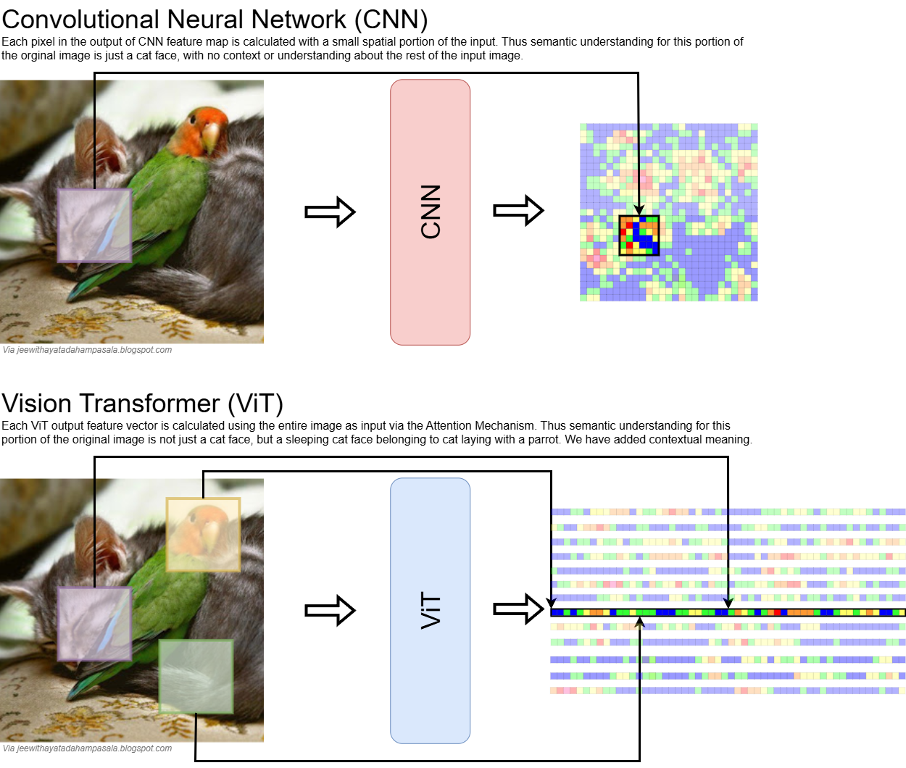
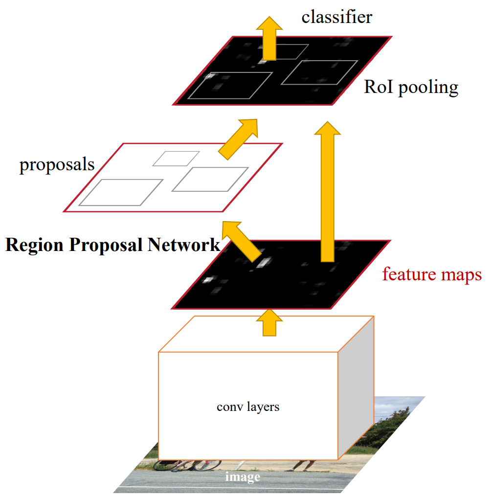
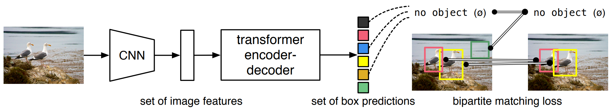
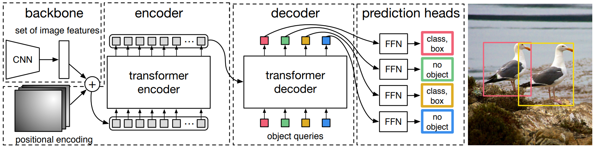

Vision Transformers
Introduction to Vision Transformers
Why Vision Transformers?
- CNNs have been dominant in vision tasks for over a decade (circa 2012-2014)
- Strong spatial inductive biases (translation equivariance, locality)
But:
- Limited receptive field
- Struggle with long-range dependencies
- Require careful architectural design (ResNet, FPN, etc.)
Key Motivations of Vision Transformers:
- Ability to capture global dependencies
- Reduced inductive bias compared to CNNs
- CNNs have a strong bias towards translation equivariance and locality
- Potential for unified architectures across modalities (e.g. text, vision, audio)
- Better scaling properties with data and model size
CNN vs ViT Motivation Diagram

Vision Transformer (ViT) Overview
- The Vision Transformer (ViT) was introduced in 2020 by Alexey Dosovitskiy et al.
- Was introduced to perform image classification, but has since been adapted for a wide range of vision tasks
Key Differences to comparable CNNs:
- Larger model size (more parameters)
- Better performance on large datasets, less performance on smaller datasets
- Better scaling behavior with model size
When to use ViT:
- Large datasets available
- Strong computational resources
- Need for transfer learning
- Robustness requirements
ViT Architecture Overview
- New ViT concept
- Reused Transformer concept
Image Patch Embedding
- Divide input image into fixed-size patches (typically 16x16)
- Flatten each patch into a 1D vector
- Linear projection to embedding dimension
- Add position embeddings
Transformer Encoder
- Multi-head self-attention layers
- Feed-forward networks (MLP blocks)
- Layer normalization
- Residual connections
Classification Head
- Special
[CLS]token for classification (only the patch-token at 0^{th} position is used in the MLP) - MLP for final prediction
ViT Paper Diagram
Applications of ViT
Image Classification
- Standard benchmark tasks
- Fine-grained classification
- Multi-label classification
Object Detection
- DETR (DEtection TRansformer)
- Deformable DETR
- Swin Transformer
Semantic Segmentation
- SETR (SEgmentation TRansformer)
- SegFormer
- Mask Transformers
Video Understanding
- TimeSformer
- ViViT
- Video Instance Segmentation
ViT Advantages
- Global Processing
- Natural handling of long-range dependencies
- No need for explicit multi-scale processing
- Better feature integration
- Scalability
- Excellent scaling with model size
- Strong transfer learning capabilities
- Data-efficient when pre-trained properly
- Flexibility
- Unified architecture across tasks
- Easy to extend to multiple modalities
- Interpretable attention maps
ViT Limitations
- Computational Requirements
- Quadratic complexity with sequence length
- High memory usage
- Expensive pre-training
- Data Requirements
- Needs large datasets for pre-training
- Less sample-efficient than CNNs initially
- May overfit on small datasets
- Architecture Constraints
- Fixed input size due to position embeddings
- Limited inherent spatial inductive bias
- Resolution constraints
Detection Transformers
What are Detection Transformers?
- Vision Transformer architectures specialized for object detection
- Emerged as an alternative to CNN-based detectors
- Combine transformer’s global attention with detection tasks
- First introduced with DETR (DEtection TRansformer) in 2020
Key Characteristics
- Architecture
- Transformer encoder-decoder backbone
- CNN feature extraction (typically)
- End-to-end trainable design
- Set-based predictions
- Advantages
- Global context modeling
- No hand-crafted components needed
- Simplified detection pipeline
- Natural multi-object handling
Why Detection Transformers?
Advantages Over Traditional Detectors
- Simplification
- No anchor boxes needed
- No non-maximum suppression (NMS)
- Fewer hand-designed components
- Performance
- Competitive or better accuracy
- Better handling of occlusions
- Strong performance on crowded scenes
- Flexibility
- Easy to extend to other tasks
- Panoptic segmentation
- Multi-task learning
Evolution of Detection Transformers
First Generation
- DETR (2020)
- First successful transformer-based detector
- Proved viability of transformers for detection
- Slow convergence, struggled with small objects
Key Improvements
- Deformable DETR
- Sparse attention mechanisms
- Better convergence
- Improved small object detection
- Conditional DETR
- Content-dependent queries (e.g. different queries for different images)
- Faster training
- Better localization
DEtection TRansformer (DETR)
Introduction to DETR
- DETR (DEtection TRansformer) was introduced by Facebook AI Research in 2020
- First successful application of transformers to object detection
- Fundamentally changes how we approach object detection
High Level Concept
- Reframes object detection as a direct set prediction problem
- Uses transformer encoder-decoder architecture
- Predicts a fixed-size set of objects in parallel
- Matches predictions to ground truth using bipartite matching
Object Detection: The Traditional Approach
- Multiple separate stages:
- Region proposal network
- Feature extraction
- Classification & regression
- Post-processing

Key Limitations
- Non-Differentiable Components
- Non-maximum suppression (NMS)
- Anchor box assignment rules
- Post-processing heuristics
- Manual Design Choices
- Anchor box sizes and ratios
- NMS thresholds
- Feature pyramid design
DETR: A Revolutionary Solution
- Direct Set Prediction
- Single-stage prediction of all objects
- Fixed-size set of predictions (e.g., N=100)
- Each prediction: {class label, bounding box}
- Built-in handling of duplicates
- Loss function ensures each object is detected exactly once

Key Advantages
- End-to-End Training
- Fully differentiable pipeline
- Single unified loss function
- No hand-tuned parameters
- Joint optimization of all components
- Architectural Benefits
- Global context through self-attention
- Natural handling of overlapping objects
- Extensible to panoptic segmentation
- Simpler implementation
DETR Diagram
Data Flow:
- Image → CNN → Flattened Features + Position Embeddings
- Features → Encoder → Global Context
- Queries + Context → Decoder → Object Predictions

1. Input Processing
Image Preprocessing
- Input image is resized and normalized
- Typically fixed-size input (e.g. 800 \times 800)
CNN Backbone
- A standard convolutional network (usually ResNet-50 or -101) extracts a feature map from the image
- Let’s denote the output feature map as F \in \mathbb{R}^{C \times H \times W}, where:
- C is the number of channels (e.g., 2048)
- H \times W is the spatial resolution (e.g., 25 × 25)
Flattening + Positional Embedding
- Flatten spatial dimensions: F \rightarrow sequence of length HW (each vector \in \mathbb{R}^C)
- Add learnable 2D positional encodings to retain spatial information
- This becomes the input sequence to the transformer encoder
2. Transformer Encoder
Purpose:
- Learn global relationships between image regions
- Composed of L layers of multi-head self-attention + feedforward networks
Input:
- Sequence of image tokens + positional encodings
Output:
- A sequence of contextually rich feature tokens (still HW tokens)
3. Transformer Decoder
a. Object Queries
- Learnable positional embeddings: a fixed set of N object queries (e.g., N=100)
- Each object query is a vector that the decoder learns to associate with a potential object
b. Cross-Attention
- Decoder uses each object query to attend to the encoder output (image tokens)
- Each query is updated with information from relevant parts of the image
Output:
- Decoder produces N output embeddings (one for each query)
- These embeddings are then projected to object predictions
4. Prediction Heads
Each decoder output goes through two small feed-forward networks (FFNs):
Class Prediction Head:
- Predicts class label (including “no object” class)
Box Prediction Head:
- Predicts 4 bounding box coordinates in [cx, cy, w, h] format (normalized to [0,1])
So the final output is:
- A set of N class predictions
- A set of N bounding boxes
5. Hungarian Matching & Loss
Here’s the key innovation:
a. Matching:
- Use the Hungarian algorithm to find an optimal 1-to-1 matching between predicted boxes and ground truth objects
- Cost is based on class prediction + box similarity (IoU)
b. Loss Function:
- Classification loss: Cross-entropy
- Bounding box loss: L1 (MAE) + GIoU
This end-to-end matching ensures each object is detected exactly once
Summary of Workflow
| Stage | Input | Output |
|---|---|---|
| Image → CNN | Raw image | Feature map (H×W×C) |
| Flatten + PosEmbed | Feature map | Sequence of tokens |
| Transformer Encoder | Tokens | Contextualized tokens |
| Decoder + Object Queries | Queries + encoder tokens | Object embeddings |
| Prediction Heads | Object embeddings | Class + Box for each query |
| Matching & Loss | Predictions + GT | Training signal |
Advantages and Key Limitations
Advantages
- No anchors, no NMS, no hand-designed proposals
- Global context via attention
- Simpler pipeline, easier to train once stabilized
Key Limitations
- Slow convergence: Requires hundreds of epochs
- Needs large data to perform well (typically ImageNet-pretrained backbone)
- Struggles with small objects in early versions
Hungarian Matching (Intuition)
- Hungarian algorithm solves the assignment problem:
- Match predictions to ground truths to minimize total cost
- Each prediction gets one target (or “no object”)
- Matches are chosen greedily for best alignment, not learned
Key Insight:
“Matching is not differentiable, but it doesn’t need to be. We don’t need to backprop through who got assigned what, just use that assignment to apply the right loss.”
DETR Matching Cost Function
What Makes a Good Match?
\text{Cost}(i, j) = \lambda_{cls} \cdot CE(c_i, c_j) + \lambda_{L1} \cdot \|b_i - b_j\|_1 + \lambda_{GIoU} \cdot (1 - \text{GIoU}(b_i, b_j))
Breakdown:
- CE(c_i, c_j): Class mismatch (Cross-entropy)
- \lambda_{cls}: Class mismatch weight
- \lambda_{cls}: Class mismatch weight
- \|b_i - b_j\|_1: Bounding box location distance (L1)
- \lambda_{L1}: Bounding box location distance weight
- \text{GIoU}: Shape + overlap quality (Generalized IoU)
- \lambda_{GIoU}: GIoU weight
Training Dynamics
What Happens After Matching?
- Matched prediction → Cross-entropy + bbox regression losses
- Unmatched prediction → “No object” class loss only
- Gradients backprop through losses, not through matching
Key Insight:
“It’s like assigning students to papers to grade: the assignment is fixed, and you judge them on how well they did. You don’t change who graded what based on the grades.”